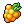

![[pkb]](meow.png)
How rare are Shinies or Legendaries to encounter
+
1/8192 for ![[pkb]](shiny.png) and 1/666 for
and 1/666 for ![[pkb]](legend.png) .
.
Shiny charms increase your shiny rate by 1% each permanently, and you can buy them for 50 each at ;shop (up to 5 max).
Golden razz berries  sets your rate to 1/500 for 50 encounters. These can be obtained primarily from lootboxes through ;vote or quests rewards.
List of Rarities In-game
+
Commun ![[pkb]](common.png) , Uncommun , Rare
, Uncommun , Rare ![[pkb]](rare.png) , Super Rare
, Super Rare ![[pkb]](superrare.png) , Legendary , Shiny , Golden
, Legendary , Shiny , Golden ![[pkb]](golden.png)
Catch Rate Table by Rarity/Balls used
+
![[pkb]](catchchart.png)
Can you decrease or eliminate the 7 second wait timer for catching Pokemon?
+
No. Without the wait timer, the bot would be overloaded by traffic. In the future, the wait timer may actually see an increase due to the volume of users on PokeMeow.